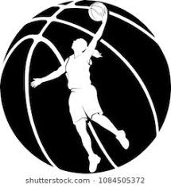

basquetbol

es un deporte de equipo que se puede desarrollar tanto en pista
cubierta como en descubierta, en el que los conjuntos de cinco
jugadores cada uno, intenta anotar puntos, tambien llamados canastas
dobles introduciendo un balón en un arco colocado a 3,05 metros de
suelo del que cuelga una red, lo que da un aspecto de cesta o canasta.
inicio